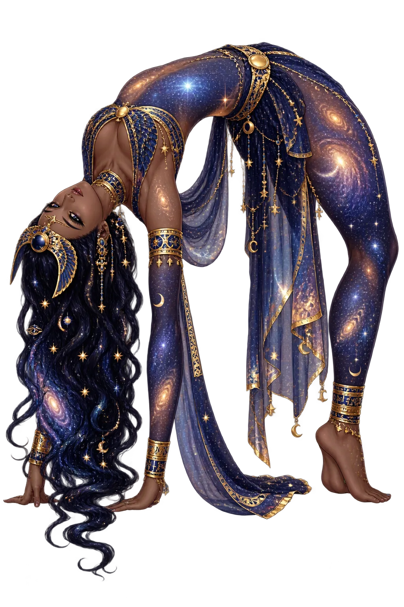
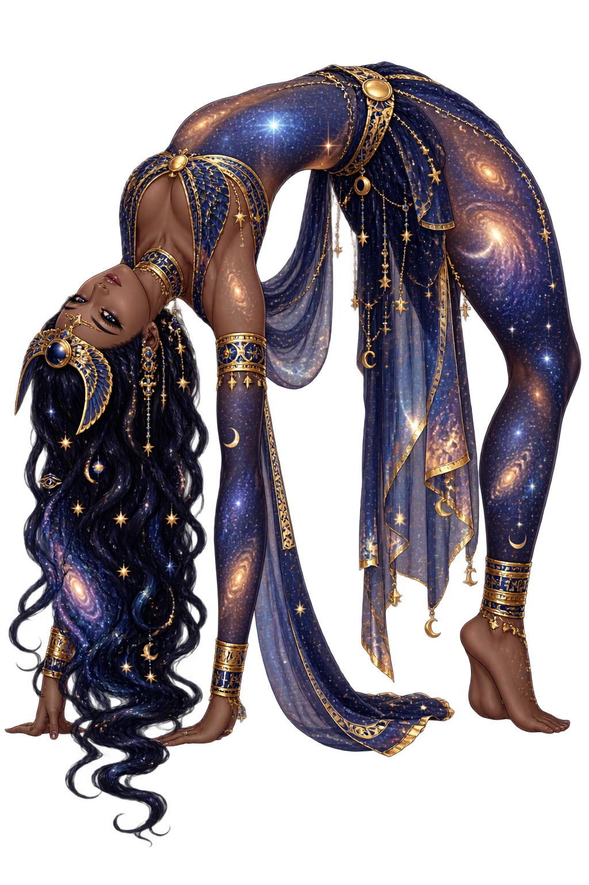

The Living Myth
Sky, Stars, Cosmos · The Sky, the Stars, the Vault of Night · Water-pot, sky

Stories of Nwt
Nut enters myth chiefly as the forbidden wife: the sky and the earth, she and Geb, were locked in an embrace Shu had to tear apart to create the world’s space. Separated, she spends eternity arched over him, swallowing the sun he receives back each dawn — the most elegant creation image Egypt produced.
Shu and Tefnut, the first air and moisture, bore Geb the earth and Nut the sky — who loved so closely that no light or creature could pass between them. On Ra’s command, or by Shu’s own strength in the tellings, the air god forced them apart and holds them apart to this day: the atmosphere itself is the wedge of creation.
The old utterances make Nut the great mother repeatedly: she who bore the gods on her five epagomenal days — the days added outside the 360-day year, won for her from the moon in the game of senet. Osiris, Horus, Seth, Isis and Nephthys were born on those five days, the only time the sky goddess could labour.
Spell 17 invokes Nut as the sow who eats her piglets and the mother who daily bears the sun: ‘I am Nut, the great one who gives birth to the gods.’ The deceased appeals to her body as the ladder of ascent — to be ‘a star imperishable’ among her children was the standard hope of the afterlife.
In the solar books the sun god’s night journey runs through Nut’s interior from mouth to womb; her body is the Duat’s architecture. New Kingdom royal tombs — from Thutmose III to Ramesses VI — paint her figure along the sarcophagus hall so that the king ascends through the goddess herself.
She Who Bends Over the Earth, Swallowing the Sun
Nwt is the sky — not a metaphor for it. Her body is the vault, starred across its length; her lips and womb the gates through which the sun passes at dusk and dawn. Each night she swallows the sun; each morning she gives birth to it again, the great cosmic rhythm painted on temple ceilings from Luxor to Dendera.
Her body is painted blue across temple ceilings, scattered with the decans and planets she carries.
By Geb she bore Osiris, Isis, Seth, Nephthys, and Horus the Elder — the third generation of the Ennead.
Each dusk the sun enters her mouth; each dawn she births it — time itself is her digestion.
She appears in tree-form pouring water and bread on the dead from a celestial sycamore.
From the original script to the living URL
𓇯
The name in its original Egyptian form. Nwt (𓇯) is attested in the source tradition — “Water-pot, sky (Egyptian nwt)”. Its original diacritics and script distinctions carry the full phonetic and orthographic weight of the source tradition.
nut
The plain nut form is identical to the Unicode restoration. Because this name is already written in Latin letters, no diacritics, stress, or script information were lost — only capitalization differs.
Nwt
The Unicode restoration does not need to recover lost marks for Nwt. Its value is canonical spelling and consistent cataloguing, not the reconstruction of erased orthography. The domain is readable as-is to both DNS and humanity.
Nwt.com
This restoration is written entirely in ASCII letters — no Punycode encoding stands between Nwt and the DNS. The domain reads identically to machines and to human eyes.
The attested spelling family of Nwt
Nwt
Restores 𓇯. The full Unicode restoration. nwt.com is not in the PuniCodex collection — it is watched for release; if it drops, this temple upgrades to an owned flagship. Attested by Faulkner, Wb.
How Nwt was spoken
How Nwt travels from ancient script to the modern URL
Egyptian nwt; the original vocalisation is unknown. The name is written with the water-pot determinative and denotes the sky.
The lore you have read is the living myth. Extended Lore opens the scholarly vault beneath it: the cult and its material remains, a history of the image, the name after antiquity, a meditation on what the name still means, and the full scholarly apparatus — etymology, orthography, sources.
Enter Extended Lore